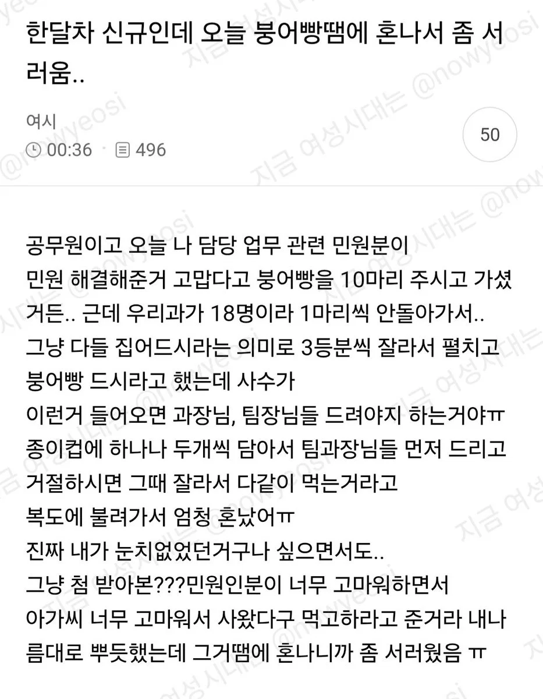
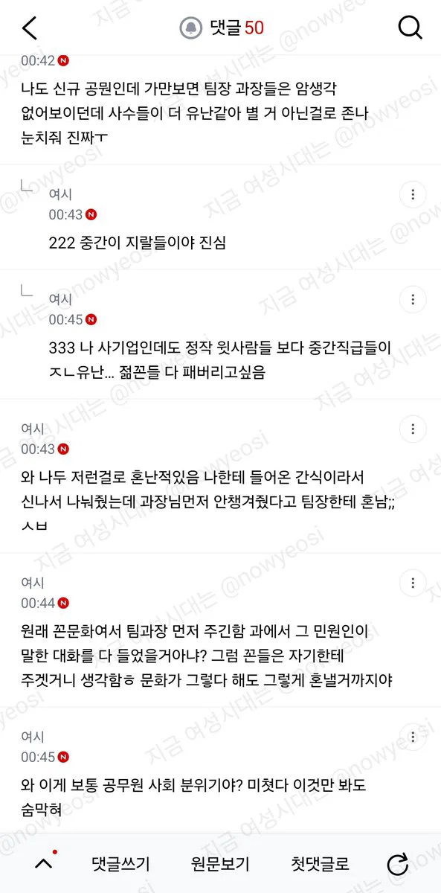
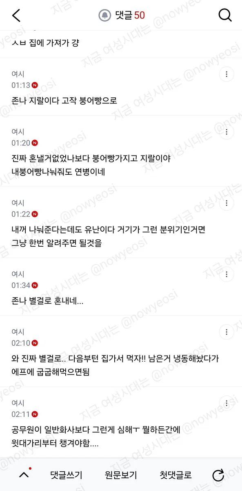

공무원 분위기 진짜로 저렇냐??



공무원 분위기 진짜로 저렇냐??
걍 휴게실에 던져놓으면 알아서 처먹어라 병신같은 문화네 ㄹㅇ
혼자먹는게 베스트고 그게 안되면 버리는게 세컨드임
아무생각없이 받았어도
꼭대기놈한테 던져야
뒷탈이 없긴해
병신같은 집단인건 맞고
아주 지랄도 지랄이네
진짜 염병들이다
팀장 과장 늙크크들이라 그런거 주던지 안주던지 관심 없으니까 신입들이나 잘챙겨라
선의로 준게 더엿 같은 상황이 되어버렸네 ㅈㄴ 짜증나겠다
진짜 지랄염병도 저런 지랄염병이없다 ㅋㅋ
뭔가 쓸데없는 조직일수록 쓸데없는 거에 집착하긴 하던데
모시는날 +여초식 간식선물 문화 그잡체임
ㄹㅇ 공무원된 친구한테 모시는 날 듣고 기겁함 ㅋㅋㅋㅋ
여자가 많아지면 꼭 저런다
사회생활 안해봤나 남자들이 저런 개좃같은거 더 따짐
그런건 좀 좁밥같아 보이는 애들 한테 하는건 가끔 본듯
지방직인 지인이 회식하고 아직도 노래방가야된다고 ㅈ같다던데
그냥 다음부터 이렇게 하라고만 하면 되는거지 혼낼필요 있나;;
지자체(시군구)마다 조직 문화가 다른데
규모가 클 수록 오히려 변화가 늦는거 같음
간부들이 권위의식이 있고 서열을 따짐
오히러 군단위 작은데가 저지랄이 더 많던데.
마치 후방 군대가 할일 없으니까 구타저변 많듯이
작은 지자체는 한,두다리만 건너면 서로 아는 집 사람들이라 조직 분위기는 오히려 수평적이고 유함
다만 그로인한 다른 문제들이 생길 수는 있지
그건 ㄹㅇ 케바케임.
솔직히 저건 팀장보다는 작은일 가지고도 개지랄떨었던 대가리 간부들의 문제가 아닌가 싶음.
평소에도 지랄하니 미리 가르쳐주는거
유독 공무원에 저런 쫌생이같은 소인배가 많은거같더라. 중간자가 저지랄하는건 어디서나 잇을법한데 유독 공무원하는애들이 진짜 개~~~사소 한거로 저러는게 많은거같음
글쎄? 일단 저런거 들어오면 윗사람에게 맡기지않나? 어떻게 하라 지시해줄테니까
저런 조직 사회에서는 팁이긴 한데 혼낼 거 까지는.
존나 널널해서 그래 ㅋㅋㅋㅋ
바쁘면 붕어빵이던 잉어빵이던 쳐다볼 시간도 없이 알아서 처먹으라고 탕비실에 던져놓고 다시 업무 복귀하지
씹새들 하여튼 존나 바쁜 식당 주방에서 한달이라도 좆뺑이 돌려봐야 정신차리지
칼로 찔렀어야지 왜 인터넷에 글을씀
먼저 안 챙기면 서운한티 존나 내는 윗사람 만나보면 저렇게 되기도 하더라
일잘해서 보답 받은 사람이 팀원들 생각해서 나눠놨는데 그걸로 꼽을? 사람들이 병신인건지 직장 문화가 병신인건지...
조직 사회에선 저런게 매우 흔하다. 저런거 부터 기강잡혀야 나중에 큰일할때 무탈없이 지나감. 이것도 허용 저것도 허용해주면 나중에 이정도 가지고 혼나야 해? 같은거 이해해주기 시작하면 개판되는건 한순간임.
특히 신입사원은 제대로 된 사회생활도 없어서 내가 아주 기겁했던적 있었음. 나도 신입사원때 많이 혼나서 잘 해줄려고 응원해줄려고 했던게 점점 버릇이 없어져 버려서 신입사원이 나중엔 이사님이나 사장님하고 직접 이야길 해야 된다는둥
왜 중간층이 지랄을 떨어야 될 수 밖에 없는지 이해는 감
ㅋㅋㅋㅋㅋ병신새끼… 기강이지랄하네
군대갔냐?
너도 붕어빵 못먹고 자랐냐?
존나 고이고 자정작용없는 조직에 한정인듯.. 저런거 신경 쓸 바에 일 하나라도 더 쳐내는게 낫지
근데 저런 인간들 많아서 그냥 알아서 드시겠죠 애도 아니고하면 알아서 사라짐 ㅋㅋㅋ
숫자 모자라면 막내들 먹으라고 몰아 줘라 좀. 목 마를까 봐 음료수 사주지는 못 할 망정.
뭐 사수가 눈치껏 혼낸걸수도 있고 쪼잔한 윗선은 저거 맘에두기도 함. 그전에 팀장이나 사수가 윗선 보란듯이 하는경우도 있고.. 사실 일이 엄청 어렵지 않고 힘들지 않으면 자기 밥그릇이나 그런거 챙길라고 수직문화를 엄격히 따지는곳들도 있음.